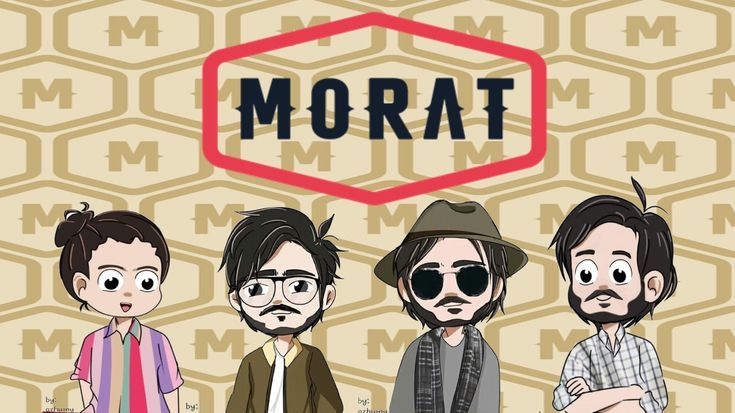

Mi Galería de Fotos



"La programación es algo muy importante"
Cumple: 20 de Junio
Signo: Sagitario
Edad: 16 años
Origen: Santa Maria
Siempre he sido de los que preguntan "¿por qué?" mil veces hasta entender el fondo de las cosas. Mi camino ha tenido de todo: días buenos, tropiezos y momentos donde me tocó empezar de cero. He aprendido que no pasa nada si las cosas no salen a la primera; al final, esos "errores" son los que me han enseñado a ser más paciente conmigo mismo y a valorar el proceso más que el resultado.
Hoy trato de vivir de forma más sencilla, dándole importancia a la honestidad y a tratar bien a los que me rodean. No busco ser perfecto, solo quiero ser una mejor versión de mí cada día, manteniendo la curiosidad viva y el corazón listo para lo que venga. Me apasiona la idea de poder ayudar a otros con lo que sé y seguir aprendiendo de cada persona que se cruza en mi vida.
Nos consideramos unas personas muy divertidas y empaticas.